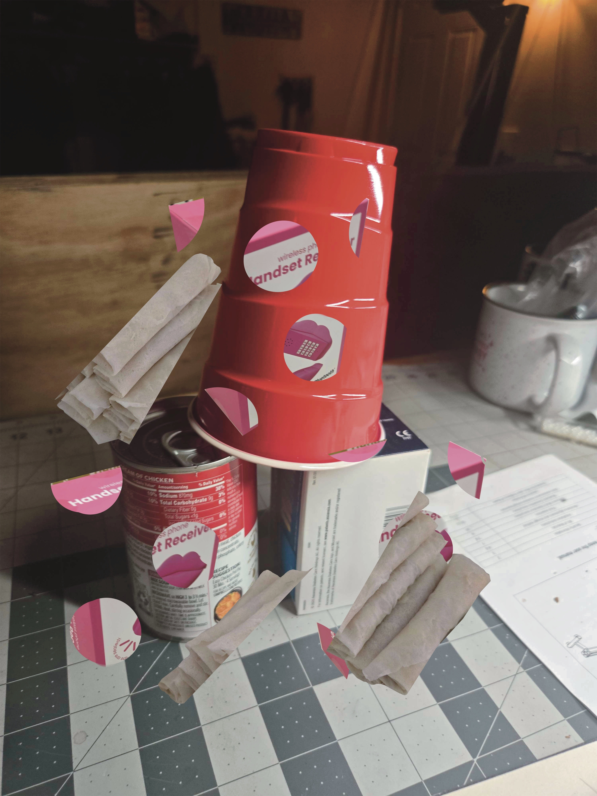
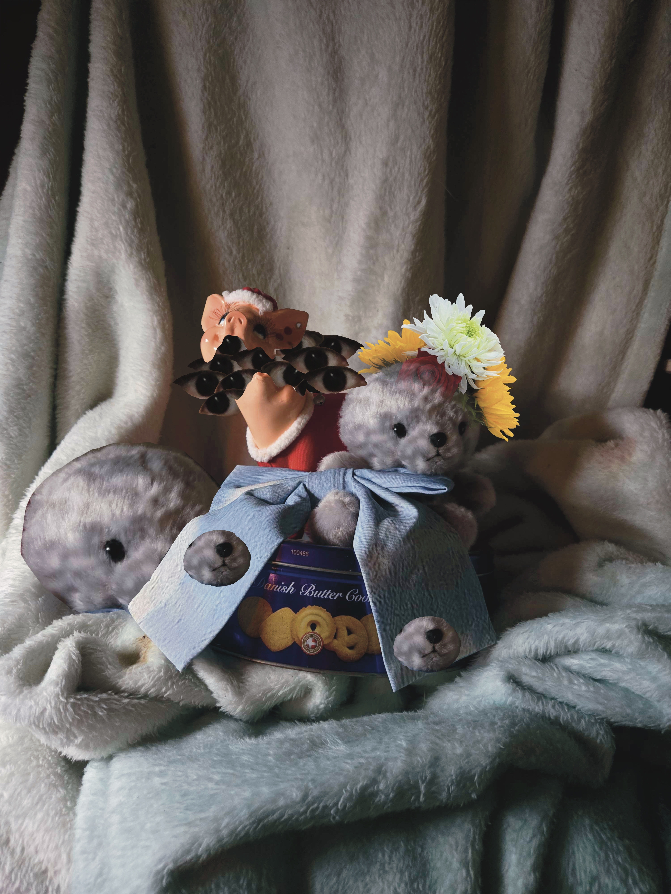
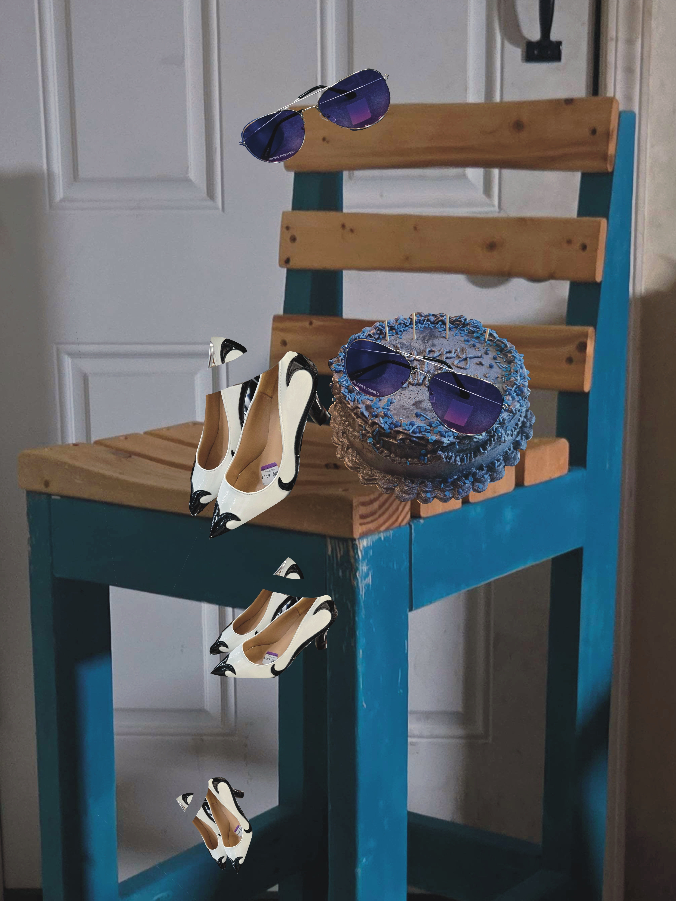

Bad Photoshop
Program: Photoshop. This was the bad Photoshop project in which we were tasked with creating 3 "bad" photoshop composites. In this project I utilized photoshop and tools such as the slection tools to create the following composites. On a technical level, I did not find this project challenging. I found it more challenging in the ideas and conceptulizing phases. I find it very hard to think in a more abstract way, and even though it was an "easy" project, I had trouble thinking about it in a non-literal way. It was a very interesting project to create something that was considered "bad" and let me experiment more on that sort of wacky side of art.



return home